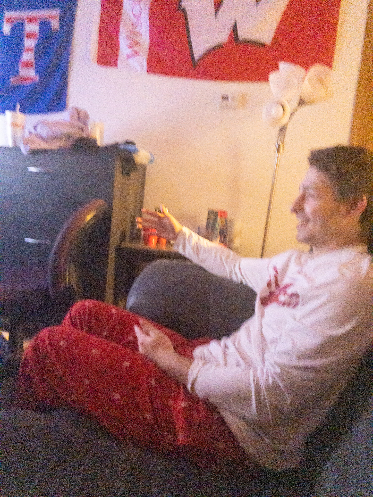

I was born on July 24, 2001 in Harrisburg, Pennsylvania to my Kevin and Cindy. I had lived in the capitol of Keystone State my whole entire life before following in the footsteps of my brother and coming to Madison for college. I grew up around the world of sports and would consider them to be a high priority in my life. Although I am definitely not the most athletic person, I was able to compete in Tennis and Basketball at a competitive high school level. Although I grew up in the middle of PA, I was never a fan of Pennsylvania teams. My favorite teams on the professional level include the Green Bay Packers and New York Mets. Aside from sports, I enjoy time outside, being with my friends, and overall making the best out of every situation.
The typical sunday for me My tennis racquet since junior year of high school 
Enjoying life